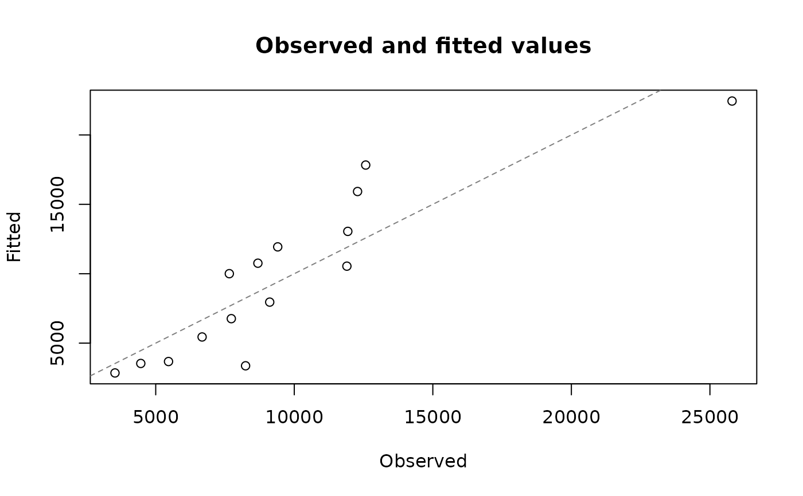
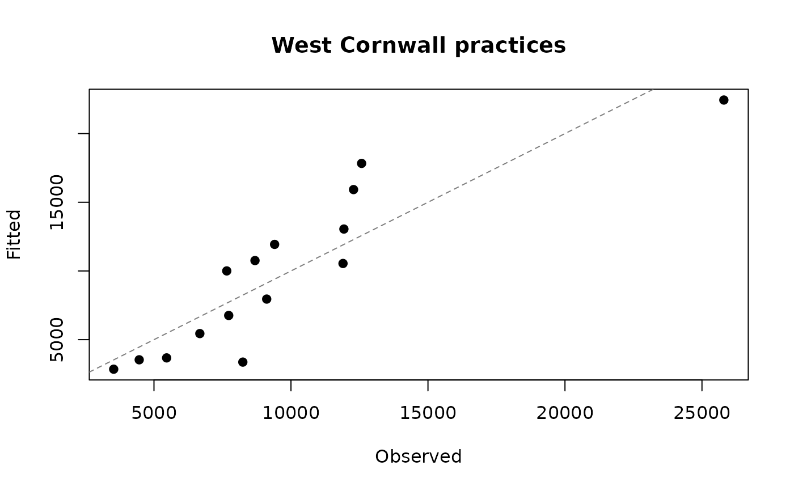
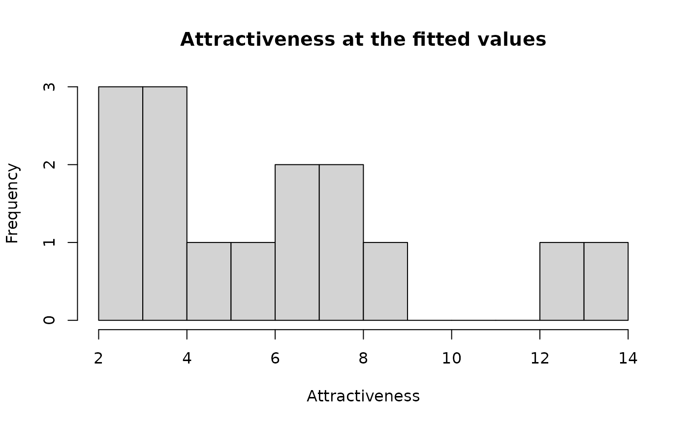

Plot saved diagnostics from the selected allocation fit
Source:R/07-allocation_results.R, R/06-ae_methods.R
plot.ae_multistart_fit.Rdplot() of a fit draws a diagnostic of its selected fit, fit$best, which has
the same method. The plots read what the fit saved; nothing is recomputed.
Arguments
- x
An allocation fit from
fit_allocation()(anae_multistart_fit), or its selected fitfit$best.- type
The diagnostic to draw:
"fit"(the default): the observed against the fitted values of the fitted output (the facility totals, or every cell of a flow matrix), with the line where they are equal."convergence": the error of the equilibrium solver at each iteration of the evaluation at the fitted values (a single iteration for the models ofclm_allocation()andhuff_allocation(), whose state does not depend on the allocation)."state": a histogram of the model state at the fitted values, the attractiveness of the facilities.
- ...
Graphics arguments passed to
graphics::plot()("fit","convergence") orgraphics::hist()("state"), such ascol,pchorbreaks.main,xlabandylabreplace the default title and axis labels.
Value
Invisibly: for "fit" the range of the plotted values, for
"convergence" the solver history (a data frame with one row per
iteration), for "state" the state at the fitted values.
Examples
# West Cornwall: the small areas and practices west of easting 170 km
areas <- sf::st_drop_geometry(cornwall_lsoa)
areas <- areas[!areas$scilly & areas$cent_x < 170000, ]
gp <- sf::st_drop_geometry(cornwall_gp)
gp <- gp[!gp$scilly & gp$easting < 170000, ]
inputs <- prepare_allocation(stats::setNames(areas$registered, areas$lsoa),
stats::setNames(gp$gp_fte_extg, gp$practice),
cornwall_travel[areas$lsoa, gp$practice])
# A fit to the registrations of these residents at these practices
flows <- cornwall_flows[cornwall_flows$lsoa %in% areas$lsoa &
cornwall_flows$practice %in% gp$practice, ]
totals <- sapply(split(flows$patients, flows$practice), sum)
fit <- fit_allocation(clm_allocation(inputs, fit_v0 = TRUE), totals,
loss = "poisson")
# Observed against modeled registrations at each practice, with a title of
# your own
plot(fit)

plot(fit, main = "West Cornwall practices", pch = 19)

# The state of this model is the attractiveness of the practices: their GP
# FTE, since kappa and beta are 1
plot(fit, type = "state", breaks = 10)
